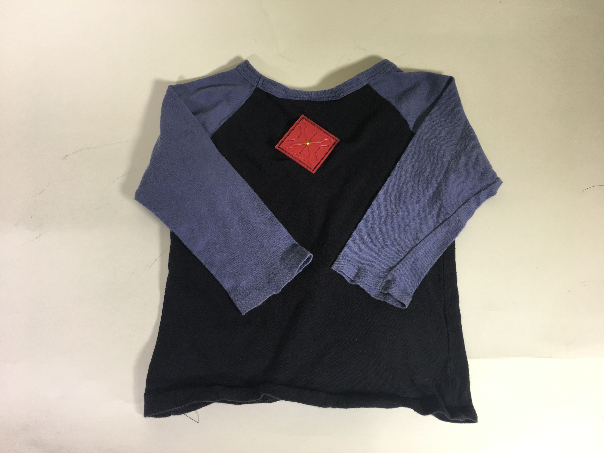
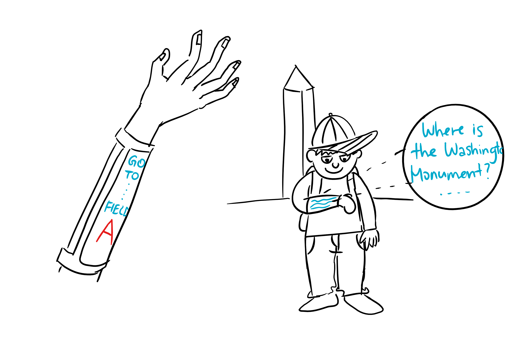
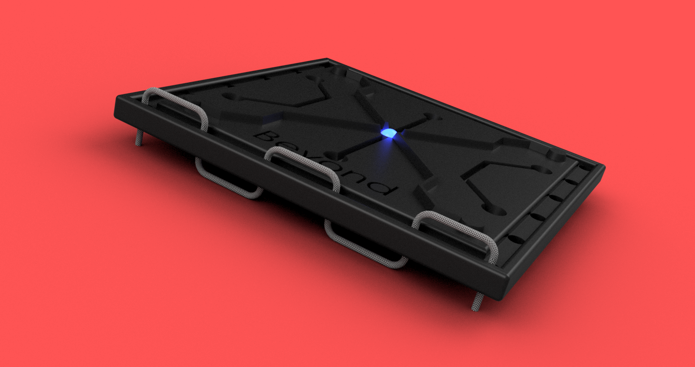
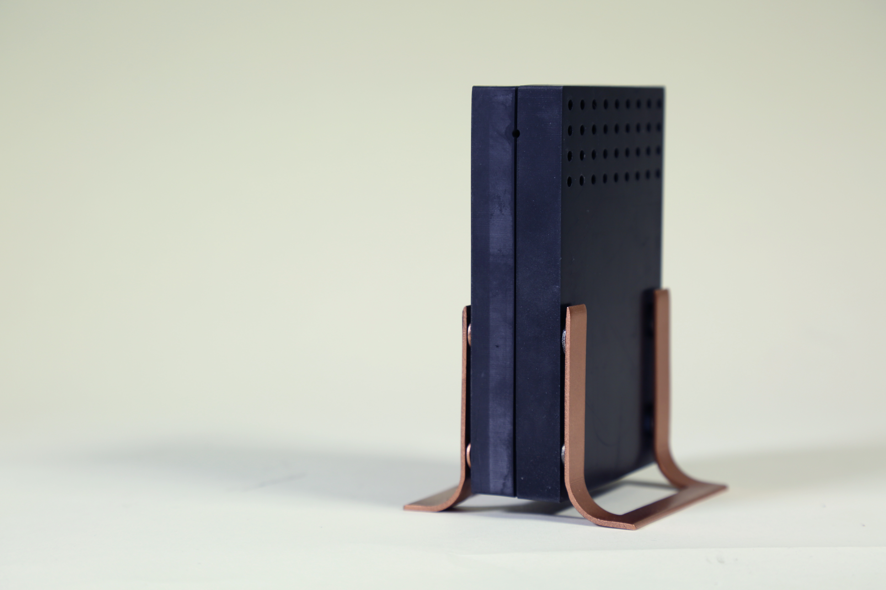
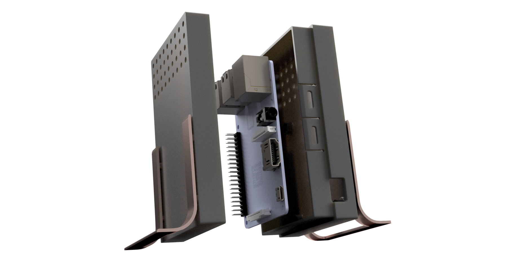
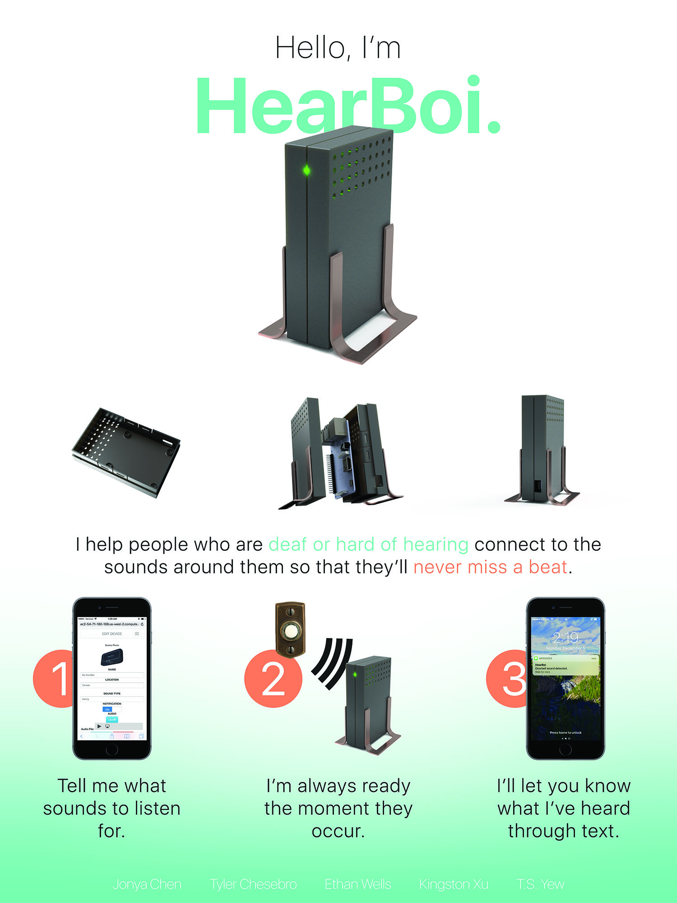
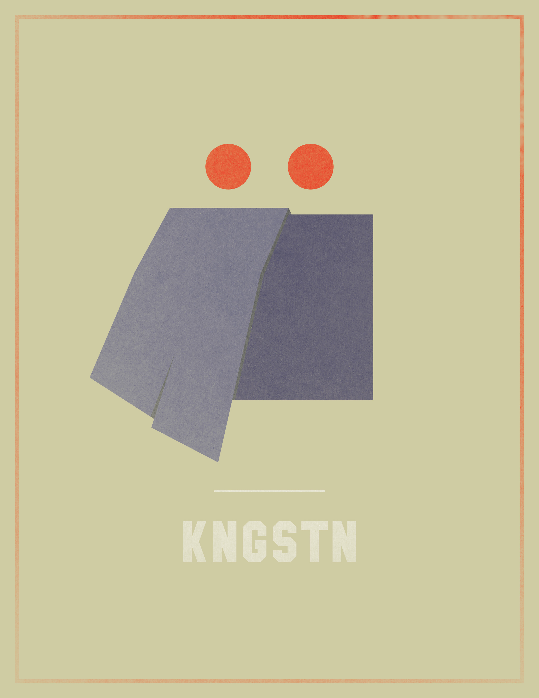
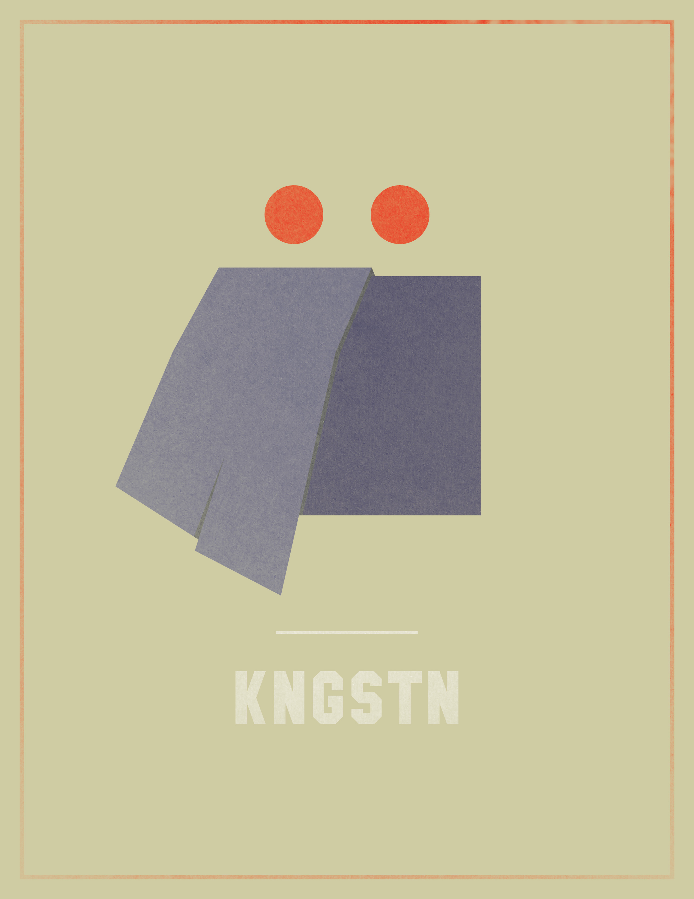

Emerging stretchable/flexible wearables exploration in the children and AR/VR spaces.

The Beyond Smartphones capstone project, in partnership with Samsung and the Stanford Bao Lab, is an ongoing endeavor in designing and fabricating wearables for two markets: children and augmented/virtual reality. Using the human-centered design process, my team of six Berkeley Master of Engineering students performed user research - from which we gained insights into the needs of the people in our target markets - and fabricated prototypes to demonstrate our vision for the wearables we will create in the coming year.
My team and I interviewed more than 20 people, both parents and children, from the United States, Venezuela, and China in an effort to understand what they wanted more of and how a wearable could serve those needs. We spent months scribbling quotes and drawing doodles on sticky notes to find patterns and trends in the precious data from our interviewees. Eventually, we arrived at five core topics: Growth/Health, Communication, Creativity, Education, and Safety.

I created concept sketches for the team's ideas for wearables that could satisfy those five core topics. Concepts ranged from Fore!, a touch-screen forearm wearable for children to draw on and communicate with others, to Seamless Sensing, smart clothes that enable parents to maintain emotional connectivity with their children and stay aware of how their children are feeling.
We created low-fidelity prototypes of Fore! and Seamless Sensing at the end of the Fall 2016 semester. Fore! was cut and sewn from fabric with velcro straps and a mock screen housed in vinyl. A child's baseball tee was modified for Seamless Sensing. In order to convey the novelty and flexibility of the electronics we would eventually receive from the Stanford Bao Lab, I designed a "widget" in CAD that would be sewn onto the prototypes.

The widget featured cosmetic markings that resembled PCB traces and a centralized LED that added some pop. The widget was 3D printed using red Ninjaflex material on a Type A 3D printer. Ninjaflex granted the widget flexibility that normal PLA 3D printing material couldn't.
Going into the next semester, my team and I plan to test our prototypes with users and gain some feedback. Reiterating with that feedback will give us an opportunity to create more refined prototypes, leading to high-fidelity ones by May 2017.
Date: 2016-present
Course: Human Centered Design Methods (ME292C), UC Berkeley
HearBoi
A sound detection device for the hearing-impaired community that alerts users with SMS notifications.

HearBoi was a semester-long project and brainchild of a five-person group consisting of software and mechanical engineers. HearBoi ran off a Raspberry Pi and USB microphone that would process sounds in the immediate environment. After a threshold was passed, the device would begin recording. If the recorded sound matched the audio fingerprint of a sound stored in the HearBoi's database, an SMS notification would be sent to the user. Unlike many new IoT gadgets being churned out today, HearBoi does not require a smartphone to function. The reason we decided to use a SMS service was so that the elderly, and others, who might not have the newest mobile technology would still be able to benefit from HearBoi.
As the creative lead for the team, I designed the physical enclosure for the HearBoi as well as promotional materials. Initial sketches (above) show the evolution of the general shape of the enclosure, as well as a rough outline for how the two halves would come together with snap fits. I wanted HearBoi to be simple and unassuming while appealing to a wide audience. Thus, I designed a compact, rectangular enclosure with minimal faces that would be just enough in size to house the Raspberry Pi and microphone.

The renderings above show the HearBoi in exploded view, the mounting system for the Raspberry Pi, and the snap-fit mechanisms. The Pi was screwed down using #4-40 screws into hex nuts that were glued inside four guiding wells. The snap-fit was a simple design that featured four bumps (on the other half of the enclosure, not pictured) that would slide into the corresponding four slots. Grooves with circular end reliefs were cut to allow flexure of the slots as the bumps slid into place.
The enclosure was designed to just fit the Raspberry Pi and microphone to minimize material and cost (the 3D printer used for the enclosure was expensive!).

I designed and printed a 30" x 40" poster in Photoshop for our final presentation that summarized the features of HearBoi in an easy-to-follow format.
ur team was happy to demo HearBoi on the final day of class. Future improvements could be made on the microphone (the one we used was $6 off Amazon and did not have a great range), but we showed the functionality just fine. The enclosure was very sturdy, but the stands could be made a bit thicker because the prototyping resin they were 3D printed out of was not the most durable. That being said, many people were easily convinced that the stands were made from copper, even though they were the same 3D printed material as the main body, just sprayed with an even coat of metallic paint.
Redefining tablets, computers, and everything in between.
During my first summer at Microsoft in 2014, I worked on the Surface 3. Prior to this experience, I had little knowledge of mass production, design for manufacturing (DFM), and CAD for consumer electronics. That all changed with my internship at Microsoft. I was a part of a diverse team of engineers who were experts on everything from buttons to PCBs to touch display modules. As an intern, I performed crucial testing for various components to ensure device integrity. I also helped reduce manufacturing costs by removing unnecessary components, namely magnets, from the Surface 3. These magnets, originally used to ensure the kickstand closed flat against the main body of the Surface, were expensive. Through rigorous testing and metrology, I determined that the magnets were actually adding negligible assistance to flatness while increasing the force required to open the kickstand.
Returning again in the summer of 2015, I was granted increased responsibility on a new project. I was given ownership over the batteries of the new product during the early design phase. While I primarily performed testing the previous year, my role shifted to CAD in 2015. In addition, I began working across teams with electrical engineers and industrial designers, who provided directions from their ends that constrained the battery in certain ways. It was an ultimate system of checks and balances - while the battery could get better in one way, say battery life, it would spell doom for aesthetics because of how much thicker they would have to be. Changing one variable would affect a whole host of others and create trickling changes to components that might not have an immediate connection to the batteries. In the end, I was able to design batteries with dimensions that had the battery life electrical engineering wanted
In 2016, my responsibilities increased again as I was given ownership of an FPC sub-assembly on the same project, now further down schedule. More than just a single component this time, the FPC sub-assembly was a complex challenge of many smaller components with more defined shapes than the battery I had worked on the previous summer. I worked with suppliers on DFM and making sure we could hit the tolerances we wanted through a lot of tolerance analysis stacks. In addition, I worked closely with the drafting team to create drawings for the FPC assembly in various states to be sent to the suppliers for manufacturing and inspection. At the end of the summer, I successfully locked the assembly design for final production, a daunting but incredibly rewarding accomplishment.
Date: Summers 2014, 2015, 2016
Role: Mechanical Design Engineering Intern
Vroom
Customizable seating for self-driving cars.
In this course, titled "Reimagining Mobility" and sponsored by Ford, I was asked to define the transportation experience of the future. The course was deliberately open-ended, and teams went in a myriad of directions for how they envisioned the future. My team, composed of four mechanical engineers and one software engineer, came up with Vroom, an autonomous vehicle service that allows the user to customize their seating space for a more personal experience.
At the beginning, we asked ourselves the question,"How might we make public and shared transportation options as comfortable and predictable as ones you own?" To that end, I created concept sketches for public vehicles like subways and trains for how users might be able to store their belongings safely and securely. This was soon replaced by the idea of designing for self-driving cars, which our team believed was not only an imminent phenomenon in the near future, but one with plenty of opportunities.


 
